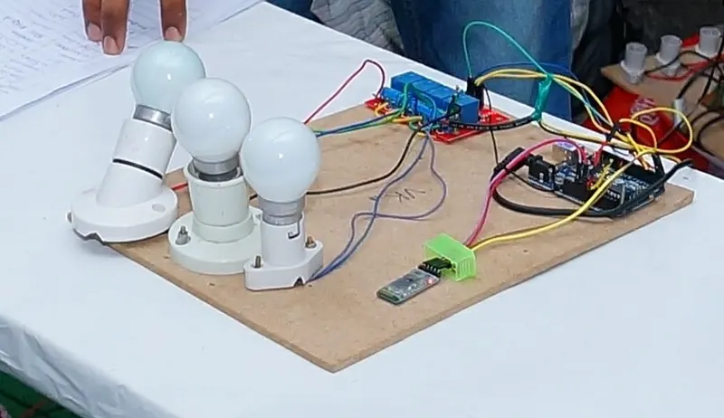
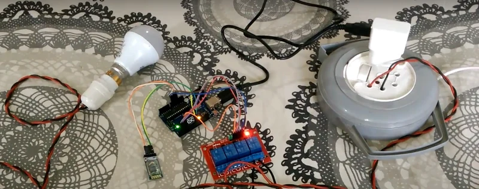
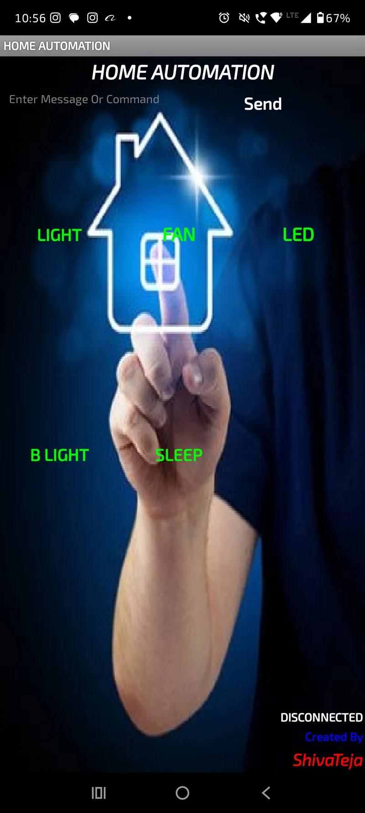

U11 · B.Tech mini project
Bluetooth Home Automation
Relay-switched mains appliances driven from an Android app over Bluetooth, with a scene mode that sequences several devices from a single command.

What it does
Lights, fans and other mains appliances switched by relays from an Arduino, driven from an Android app over Bluetooth. Each command maps to a device and an action, and a scene mode sequences several devices from one command — for shutting a room down without sending five separate instructions.
Doing it safely
Anything switching mains deserves respect. The relay modules are opto-isolated from the logic side, the low-voltage and mains sections are physically separated, and it runs off a properly regulated supply rather than a bench adapter.
The firmware tracks relay state rather than inferring it, so what's on is always known.
Gallery

